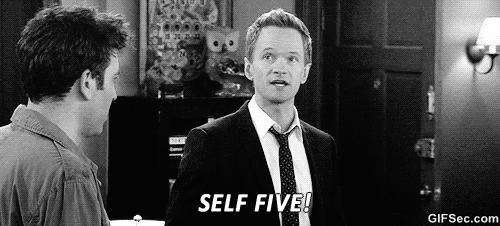

My basic information!

My name is Rayvie Anthony C. Pecajas. There's really nothing interesting to know about me except the fact that I once ate a whole pizza by myself. I'm a student at University of Southeastern Philippines (USeP), studying Information Technology (IT).
I am a master at procrastinating!
 Assignments? Projects? Activities? Responsibilities? If I can do it later, I'll do it later. This is what is usually found in my mind during my daily life. I never do anything until its deadline. "Never put off until tomorrow which can be put off until next week" is one of my favorite motto. In fact, this very website was finished only before its deadline though I started like weeks ago.
Assignments? Projects? Activities? Responsibilities? If I can do it later, I'll do it later. This is what is usually found in my mind during my daily life. I never do anything until its deadline. "Never put off until tomorrow which can be put off until next week" is one of my favorite motto. In fact, this very website was finished only before its deadline though I started like weeks ago.
I am the physical embodiment of awkwardness
 When I am with a group of friends I can become the most irritating, eccentric, and obnoxious human being you can ever meet in your entire life but put me in a one-on-one situation or let me talk to a crowd with only myself to support my ever shrinking ego and I'll be screaming (inside, hopefully) while trying to balance myself as I am at the brink of insanity.
When I am with a group of friends I can become the most irritating, eccentric, and obnoxious human being you can ever meet in your entire life but put me in a one-on-one situation or let me talk to a crowd with only myself to support my ever shrinking ego and I'll be screaming (inside, hopefully) while trying to balance myself as I am at the brink of insanity.